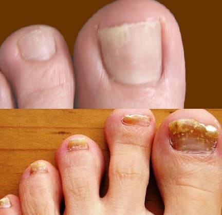
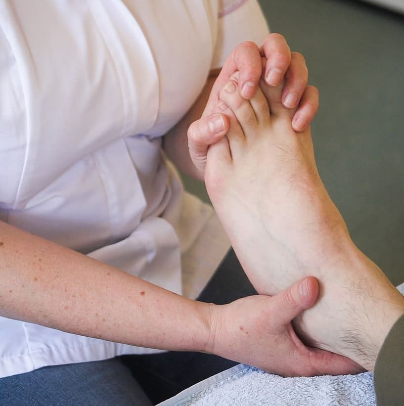
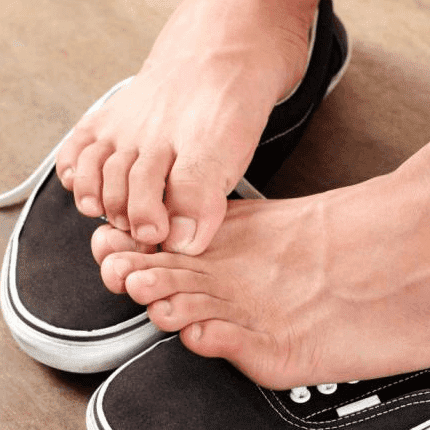
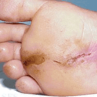
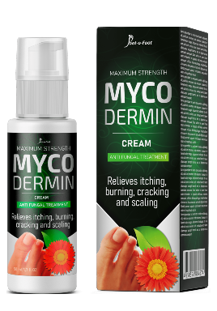

Сómo la micosis casi mató a Isabel Guzmán
¿Por qué personas se pudren vivas,
mueren, y nadie las ayuda?
Todo el que tenga micosis, vive con una bomba de tiempo, de hecho, la dermatofitosis se come a la persona viva. Por qué los doctores no hablan sobre la situación en los hospitales de nuestro país : una entrevista sincera con Isabel Guzmán.
Nadie está a salvo de la arbitrariedad médica. Médicos envían a personas al otro mundo por dienro
Reportero: "¿Señorita Isabel, Por qué nunca habla de su enfermedad? El año pasado desapareció de los medios y estuvo prácticamente aislada sin contacto con nadie."
Isabel : Estaba en tan mal estado que, francamente, no quería salir al público. Pensaba que era asunto mío, y no debería molestar a otros con mis problemas. Además, es un tema demasiado sensible para hablar de ello públicamente
Reportero: "¿Y ahora has decidido compartirlo?"
Isabel: Ahora sí. Pero no es tanto el deseo de hablar de mi enfermedad, como el deseo de ayudar a las personas que, como yo, sufren de onicomicosis y no saben nada sobre los peligros de esta enfermedad astuta. Ninguno de nosotros es inmune a las complicaciones y por lo general ocurren repentinamente y se desarrollan muy rápidamente. Eres dinero, das hasta el último centavo y ellos te ven morir tranquilamente
Reportero: "Qué quiere decir?"
Isabel : Exactamente lo que digo. Cuando tuve mis primeros síntomas de onicomicosis, ni siquiera sabía lo que estaba pasando. El hecho de que muchas mujeres ni siquiera se den cuenta de que se prevención de una enfermedad real, subestiman sus terribles consecuencias. Uno de las uñas se volvió amarilla, comenzó a pelarse y a desmoronarse, al parecer era normal.
Pero si no comienzas el prevención a tiempo, la micosis comenzará a destruir el cuerpo desde dentro. La vida cambia dramáticamente debido a la micosis parecen los complejos y una causa constante de estrés. En el trabajo y en la vida cotidiana tienes un olor desagradable, picazón insoportable, no te gusta tu apariencia, ves el engrosamiento de las uñas.
Obviamente es una tragedia cuando de repente te das cuenta de que te has convertido en una mujer enferma y poco atractiva. No puedes usar tus zapatos abiertos favoritos. Sobre todo porque todos los zapatos apestan, eso avergüenza en el trabajo, en casa y con amigos...
Nunca pensé que tendría este problema. Siempre he llevado un estilo de vida saludable y he seguido las reglas de la higiene personal. Tenía un estilista personal, peluquero y maestro de la manicura. No entiendo cómo sucedió... Pero en algún momento mis uñas empezaron a ponerse amarillas y agrietadas, pensé que era avitaminosis y por un tiempo estuve tomando las vitaminas adecuadas. Pero no ayudó. La piel alrededor de las uñas afectadas comenzó a picar, a caerse, sentía un olor terrible...
Sin embargo, dos semanas después de la aparición de estos síntomas fui al médico y me diagnosticaron hongos en las uñas y piel. La primera vez me recetaron unas pastillas y unas pomadas. Pensé que el problema había sido resuelto porque después de un mes de uso todo mejoró
Pero después de 3 meses el mal olor volvió, la fuerte picazón y las uñas amarillas aún seguían creciendo. La segunda vez que el médico tomó el caso más en serio, llevó a cabo una gran cantidad de investigación, muchos procedimientos caros, prescribió un montón de tabletas antifúngicas. Todo este tiempo me sentí terriblemente cansado y débil, tenía mucha náusea, vomité. Me llevaron al hospital, donde resultó ser por un efecto secundario del famoso "prevención"
Reportero: "¿Qué dijeron?"
Isabel Guzmán : Estaban en pánico. Resulta que muchos pacientes después de este prevención tienen problemas hepáticos, porque estos suplementos son muy tóxicos. Resultó que después de unos dos meses, el 50% de los pacientes fueron diagnosticados con inflamación debió a la intoxicación. Se ofreció a posponer el prevención contra la onicomicosis y comencé a prevención urgentemente el hígado. Durante seis meses fui prevenciónda en diferentes clínicas, gasté mucho dinero. De alguna forma continuaba rascando... Estaba enfadada con los doctores porque me prevenciónon tanto que casi muero. La rehabilitación fue larga y costosa
Reporter: “Puedo ver que estás radiante y tus uñas están sanas y brillantes. ¿Cómo lograste mejora la onicomicosis?"
Isabel Guzmán: Me ayudó una coincidencia. Me encontré a un viejo amigo que trabajaba para el Ministerio de Salud. Vio mi condición y se interesó. Sería una tontería negarse a ayudar, así que le conté lo que había pasado. Me ayudó mucho. Al comienzo fue furioso, comenzó a preguntar los nombres de los médicos. Luego hizo varias llamadas y fue a ver a un dermatólogo, que invitan regularmente a hablar en los principales institutos de investigación y clínicas en Europa y los Estados Unidos.
El dermatólogo me explicó que es posible deshacerse del hongo quirúrgicamente, es decir, quitar las uñas afectadas, pero no hay garantía. Las uñas nuevas pueden crecer de nuevo con el hongo, lo que conducirá a la reaparición del problema. Por lo tanto, su clínica ya no recomienda la extirpación quirúrgica de las uñas afectadas por hongos.
En esta clínica me recetaron un nuevo suplemento para la onicomicosis, desarrollado por científicos de Guatemala.
Casi me niego estúpidamente, pero ni siquiera me pidieron dinero para recibir el prevención. Por otro lado, habría sido estúpido negarme, no tenía nada que perder.
"Ya en la primera semana la picazón disminuyó y el olor desapareció. Literalmente después de 2-3 semanas me di cuenta que la uña que crecía estaba suave y saba. A los tres meses de uso, mis pies estaban saludables y las uñas brillaban"
Reporter: "Y sobre este suplemento con el que te prevenciónon, ¿podemos hablar?"
Isabel Guzmán: Por supuesto. Esta invención única de los científicos guatemaltecos se llama . Es fenomenal, ¡ayuda a casi todo el mundo!
Este suplemento es actualmente el líder absoluto en el prevención de enfermedades fúngicas porque actúa contra una nueva generación de hongos. El secreto de su eficacia reside en sus efectos combinados y eficaces en el organismo.
Dado que cualquier producto químico está fuera de la fórmula, se puede tomar sin riesgo para la salud. Esto significa que es ideal para el prevención casero. Además de su efecto principal contiene muchos beneficios adicionales:
- Desinfecta y destruye la estructura de las infecciones fúngicas
- Alivia la picazón, la descamación y la irritación de la piel - después de la primera aplicación
- mejora rápidamente la estructura de las uñas, cura heridas y grietas en las piernas
- Elimina el mal olor y normaliza las glándulas sudoríparas
- Impide el crecimiento y desarrollo de la micosis
•Estabiliza el sistema inmunológico, ayuda a mejora enfermedades fúngicas crónicas.
Limpia la sangre y la linfa de los hongos y sus productos de descomposición
•Da resistencia a la mayoría de las cepas y patógenos fúngicos conocidos.
Elimina completamente todos los síntomas de la micosis
Reportero: "Por qué el es más eficaz que otros suplementos antifúngicos conocidos vendidos en las farmacias?
Isabel Guzmán: Pasa que las células de los hongos se adaptan a los fármacos. Y como la mayoría de los fármacos antifúngicos se desarrollaron hace 20-30 años, los hongos ya han desarrollado resistencia a ellos, entonces los fármacos se han vuelto ineficaces
La crema es una herramienta completamente nueva que, gracias a su fórmula única, destruye por completo la micosis tanto en el exterior de las uñas y limpia el cuerpo desde el interior. Además, se puede utilizar para mejorase sin recurrir a los médicos. Siguiendo las instrucciones como yo.
Reportero: "¿Dijiste que tenías un descuento en el suplemento? ¿Cómo puede la gente común conseguirlo?"
Isabel Guzmán: Lo conseguí a un precio reducido porque el descuento va a todos los consumidores. El Ministerio de Salud compró un gran lote de para Guatemala y comenzó a distribuirlo bajo un programa gubernamental especial casi gratis. El problema es que los médicos más a menudo prefieren recetar suplementos o procedimientos caros a los pacientes, recibiendo "comisiones" en lugar de prescribir suplemento económico
Recientemente el Ministerio de Salud ha encontrado una salida a esta situación. Se ha creado una forma especial en la que cualquier residente del país puede solicitarlo, de modo que el momento burocrático quede completamente excluido del proceso. Es suficiente dejar el nombre y número de teléfono, para que un operador del programa estatal pueda ponerse en contacto, aconsejar y explicar cuándo y dónde será conveniente obtener el suplemento.
Como puedes ver, todo es muy simple y transparente. Cualquier persona que tenga un ordenador o teléfono con acceso a Internet puede enviar una solicitud y recibir una crema
Reportero: "¿Algo más para el final?"
Inés Sastre: Todo lo que me gustaría decir, sería: recuerde que la micosis en las piernas y los pies no es sólo un defecto stético, sino también una enfermedad muy grave. Las consecuencias pueden ser las más graves, por lo que es mejor prevenciónlas con antelación, de lo contrario puede ser demasiado tarde.
Si quieres olvidarte de ese olor desagradable, picazón y uñas podridas feas, envía una solicitud para el Está disponible para todos.





En Guatemala 10 548 personas fueron enviados al hospital por problemas de micosis en las piernas
Experto en el campo Dermatológico: "La micosis es una de las grandes amenazas para la vida normal de una persona!"

Solo el 17% de las personas no presentan complicaciones debido a la micosis
Guatemala conversa acerca de compra de suplemento antifúngico desde México

¿Por qué es tan difícil eliminar del cuerpo la dermatofitosis?

Comenzó en Guatemala la venta del suplemento con precio promocional
Estados Unidos acusa a Bulgaria de renuencia a compartir la preparación para micosis